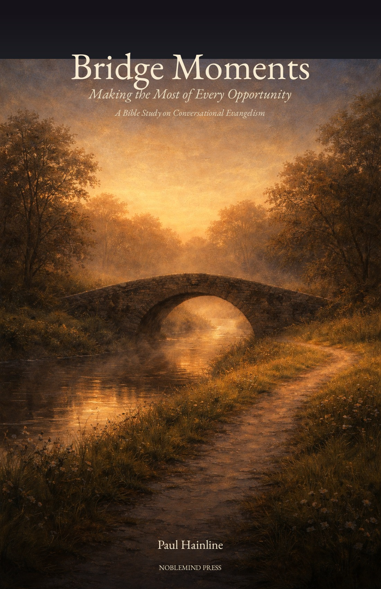

Making the Most of Every Opportunity
20 Chapters • 4 Parts • 3 Appendices
← Return to Books
“Walk in wisdom toward outsiders, making the most of the opportunity. Let your speech always be with grace, as though seasoned with salt, so that you will know how you should respond to each person.”— Colossians 4:5–6 (NASB)
In Chapter 1, you will be asked to write three names — people in your life who need a bridge moment. These names will travel with you through all 20 chapters.
The complete 185-page study — all 20 chapters and 3 appendices — formatted for print and e-readers.
Free to download, share, and study. If you quote from this work, please credit: Bridge Moments by Paul Hainline.
Questions? Thoughts? We'd love to hear from you.
@Bridge_Moments